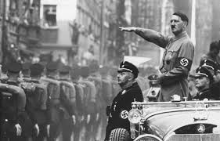

Bem-vindo ao site sobre a Segunda Guerra Mundial
Você pode usar a barra de navegação acima para viajar pelo site e descobrir novos tópicos!
A Segunda Guerra Mundial foi um dos eventos mais significativos do século XX. Aqui, você encontrará informações detalhadas sobre os principais acontecimentos, figuras históricas, e as consequências desse conflito global.
